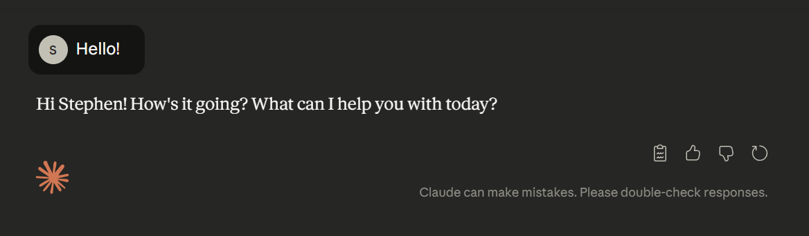
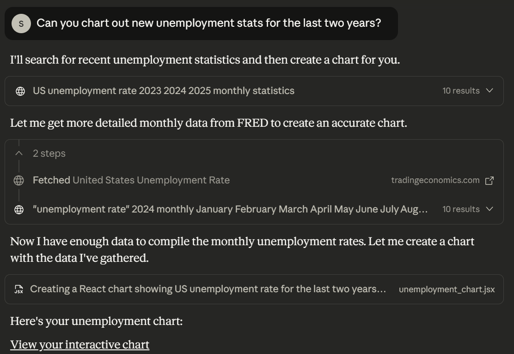
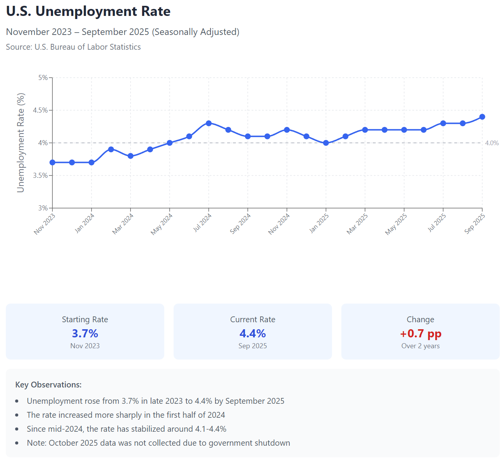
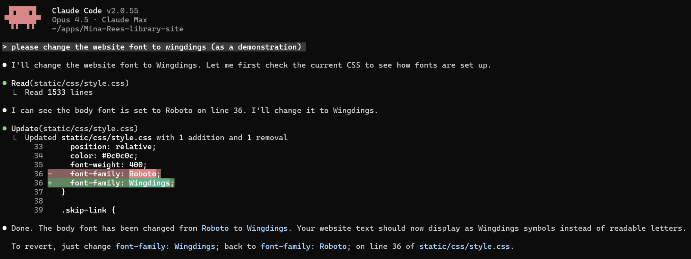

The chatbots you know
ChatGPT, Claude, Copilot, Gemini. The basic experience is familiar: you type something, and it types back.
Underneath the chat, the mechanism is simple.
Stefano Morello · Zach Muhlbauer · Stephen Zweibel
CUNY AI Lab
The basics, in plain terms
We use these tools every day. You don’t have to.
Saying no to AI in your classroom is a legitimate answer, and we’ll treat it as one. Today we’ll explain how the tools work, so whatever you decide is informed.
The Graduate Center’s draft guidance points the same way. It keeps a person in charge and lets them opt out.
ChatGPT, Claude, Copilot, Gemini. The basic experience is familiar: you type something, and it types back.
Underneath the chat, the mechanism is simple.

When the model answers, it isn’t looking anything up. It’s generating a likely continuation of your text, one piece at a time.
Underneath, it repeats that one step, many times over.
There’s no store of facts inside it to look up.
It doesn’t understand or intend anything.
On its own it isn’t checking the web, only generating what fits.
Because it’s built to produce what sounds right, it can sound completely sure and still be wrong.
Citations and quotes that never existed, written as confidently as the true ones.
Including the skews in the text it learned from, which show up unevenly in what it produces.
Models are trained in a way that rewards a confident guess over an honest “I don’t know.” Source: Kalai et al. (OpenAI & Georgia Tech), 2025.
Tools, loops, and review
Ask a plain model for today’s weather and it makes a confident guess, with no live data behind it.
It can’t reach today, so it produces something shaped like a weather answer.

Newer systems pull in information instead of guessing:
Given live sources, it can answer the same question from current data.

The system hands the model a short list of things it can do, and it picks one when that seems useful. That’s “tool use.”
Query the web, a catalog, or a repository
Read a file, a page, or a record you point it at
Execute code and read back the result
A plain chatbot answers and stops.
An agentic one keeps going. It looks at a result, decides what to do next, calls another tool, and repeats until the task seems done.
So it can take several steps toward a goal on its own.

“Chart the unemployment rate for the last two years.”
← The request, and what it produced.


Describe what you want in plain language and let the agent make the change. Here, “change the site’s font to Wingdings.” You can make working things without writing every line.
When it does more on its own, you have to check more of what it produces, and you’re responsible for the result.

What holds up, and what’s overstated
It can be confidently wrong. As the web fills with machine-made text, the writing everyone draws on gets worse, and models trained on their own output decay.
Still, not everything it writes is junk. A rough draft is often fine; when something has to be right, check it against a source.
On quality decaying when models train on machine-made text: Shumailov et al., Nature, 2024.
It reflects and can amplify the skews in its training data, and the harm lands unevenly. Models judge identical writing differently by dialect, steering speakers of African American English toward worse outcomes.
Dropping the tool doesn’t remove the bias. It’s measurable, you can test for it, and human reviewers carry their own.
On dialect-based discrimination in model decisions: Hofmann et al., Nature, 2024.
It’s mostly about power and money: who profits, and the low-paid workers, many in the global south, who label and moderate the data, often for a couple of dollars an hour.
It isn’t replacing teachers or writers wholesale. For now it mostly shifts tasks around and adds pressure.
On data-work conditions: TechEquity & Alphabet Workers Union–CWA, 2025.
A few firms control the models, the chips, and the cloud, and set the terms and prices. One company holds over 80% of the AI chip market.
Abstaining doesn’t change the concentration; it leaves those firms in control. This lab runs a public, non-commercial alternative for CUNY, built on open models.
On concentration across chips, cloud, and models: OECD, 2025.
Data centers can strain local water and power, especially where they’re sited in dry regions, and the industry is often secretive about it. Training one large model can evaporate hundreds of thousands of liters.
One person’s use is a rounding error, and the totals, though growing, stay small next to power generation and farming.
On water and energy at the infrastructure scale: Li et al., CACM, 2025; IEA, Energy and AI, 2025.
The unease is fair. A lot of open and public writing was used for training, and most people were never asked.
The open licenses we use were written to permit broad reuse, and a notice can’t take that permission back. Work you edit and shape is yours to license. Creative Commons and others are pushing for reciprocity instead, with credit and payment back to creators.
On human-authored work staying copyrightable: U.S. Copyright Office, Part 2, 2025. On reciprocity: Creative Commons, CC signals, 2025.
Judging use, and the right to refuse
It disrupts how we assess writing, and writing is where a lot of thinking happens.
Detectors and bans don’t fix it. They mis-flag honest work, fall hardest on non-native writers, and have wrongly accused students of cheating. So the response has to be about how we assess.
On detector unreliability in education: Information (MDPI), 2025.
For making and adapting open materials, a few uses are worth it, as long as a person owns the result.
Draft alt text and captions, then check them. It can speed up a tedious obligation.
Turn scanned pages and old PDFs into editable, publishable text.
Rough drafts and translations you revise into shape.
A few questions to ask in every case:
A person stands behind the result, and it’s theirs to license once they’ve shaped it.
Say where AI helped. The lab has a disclosure tool for it.
Check what it produced against a reliable source before it ships.
Hand it your own materials; don’t rely on it to already know.
A first-year writing instructor, Nicole Walker, built this after our workshops. A student pastes in a source passage, a cultural artifact, and a paragraph connecting them; the model gives feedback against a four-stage scale, from loose juxtaposition to full synthesis.
The AI doesn’t write the paragraph. It keeps asking the student to revise until the claim needs both the source and the artifact.
The judge is itself a model scoring a rubric, so the teacher’s standard is the backstop. And Walker names the deeper cost plainly: building it meant “committing all the sins of instrumentalist thinking.”
A person designed it and sets the standard; the model speeds up the revisions.
Adopting and refusing are both legitimate. Whichever you choose, you should be able to say why.
Use it where it helps, with someone accountable for the result, and say why.
Decline it where it doesn’t fit, and say why. The GC guidance leaves room for exactly that.
Where in your teaching would a grounded, course-specific assistant help, and where would it get in the way?
What would informed refusal look like in your field? What would you want to tell a student about it?
If you released an OER, how would you want AI to be allowed to use it, or not?
What’s one resource you’ve wanted to build but couldn’t? Could anything here lower that barrier?
Which of today’s worries still feels unresolved to you? Let’s push on it.